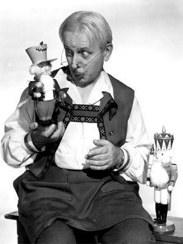

The
Toymaker
Ever
since
The
Toymaker
made
its
debut
on
television
last
May,
it
has
enjoyed
tremendous
popularity
among
children
as
well
as
their
parents.
The
15-minute
weekday
program
and
the
half-hour
Saturday
show
are
seen
by
more
than
30,000
children
and
receive
an
average
of
1,500
letters
a
month.
Current
happenings
are
dramatized
with
the
principle
characters
being
the
toys
themselves.
A
recent
example
of
this
was
a
complete
circus
parade
put
on
in
the
toy
shop
to
tie
in
the
the
Portland
appearance
of
the
Ringling
Bros.-Barnum
&
Bailey
cirucs.
Frederick
Giermann
stars
as
the
lovable
German
toymaker.
He
is
joined
on
the
Saturday
show
by
Mrs.
Toymaker
(Gail
Giermann)
and
they
invite
five
children
to
appear
with
them
as
guests.
The
Toymaker
himself
is
a
veteran
in
show
business,
having
appeared
in
over
70
motion
pictures
for
MGM,
Paramount,
Columbia
and
Warner
Bros.
He
appeared
in
features
roles
in
"Action
in
the
North
Atlantic,"
"Counter
Attack"
and
"Hostages"
to
name
only
a
few.
Mrs.
Giermann
has
also
spent
many
years
in
motion
picture
work.
The
Toymaker
is
produced
by
John
R.
Ralston,
a
native
of
Albany,
Ore.
Since
the
war
he
has
appeared
on
the
New
York
stage,
had
featured
roles
in
movies
and
has
had
considerable
experience
on
production
staffs
of
major
Hollywood
studios.
Scheduled
for
an
early
appearance
on
The
Toymaker
is
Rosie
the
elephant.
Sponsors
of
the
show
include
The
Toy
House,
Alpenrose
Dairy,
Sperry
Wheathearts,
Polt-O-Products
and
Grandma's
Cookies.
Article
in
TV
Life
Magazine,
September
20,
1953.